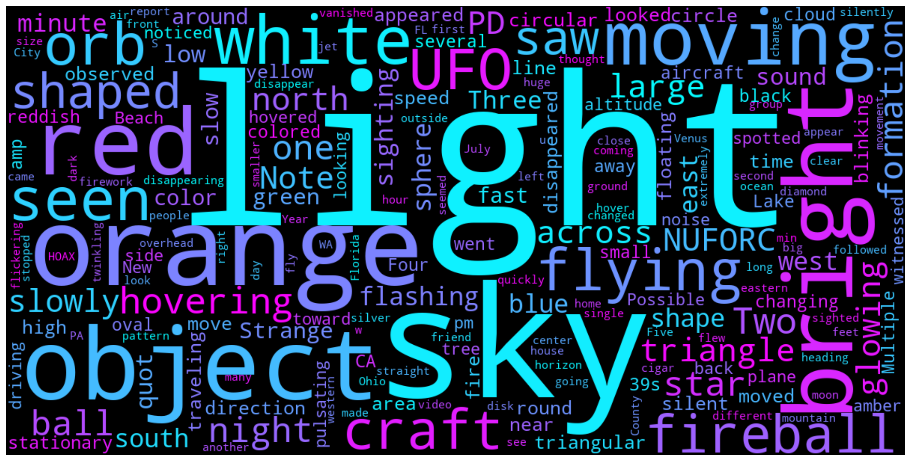

scrubbed.csv from the National UFO Reporting Center (NUFORC), containing approximately 70,000 UFO sighting reports with attributes such as datetime, location, and comments.
comments field. Data was filtered to U.S. sightings from 2010 onward with durations longer than two minutes. Text was cleaned by removing noise such as URLs and combining all descriptions into a single corpus for analysis.

This visualization highlights the most common words used in UFO sighting descriptions, revealing consistent patterns in how people interpret and report unexplained events. Terms such as “light,” “object,” “orange,” and “flying” dominate the dataset, suggesting that sightings are often described in terms of brightness, motion, and color rather than clearly identifiable structures. The presence of geometric descriptors like “triangle,” “circle,” and “orb” indicates recurring visual themes across reports. Overall, this suggests that while individual sightings vary, people rely on a shared and limited vocabulary to describe ambiguous aerial phenomena, reflecting both common perception patterns and the inherent uncertainty of these experiences.